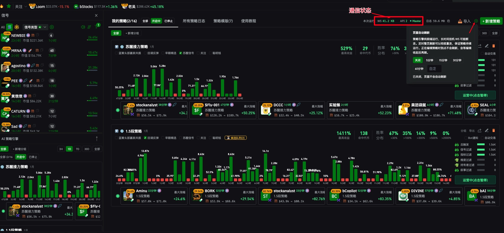

电脑必须保持运行
目前 AI 策略采用全前端运行方式。如果电脑关机或进入黑屏状态，策略就会失效，不再产生信号。
建议的运行方式
为 AI 策略单独打开一个浏览器页签，并让这个页签保持激活。右上角通信状态持续显示 Master，代表当前策略页面处于运行状态。
1检查通信状态与页面自动刷新

通信状态在策略页面右上角。保持显示 Master，说明该页签正在负责策略运行。
人在电脑前
关闭自动刷新
保持策略页面单独开启并处于激活状态，页面自动刷新选择“关闭”。持续关注通信状态，确认一直显示 Master。
暂时不在电脑前
自动刷新设为 60 分钟
将策略页的页面自动刷新设置为 60分钟，然后关闭其他 LogEarn 页签，只保留这个策略页签运行。
关键：不要同时保留多个 LogEarn 页签运行策略。以单独策略页签中的
Master 状态为准。